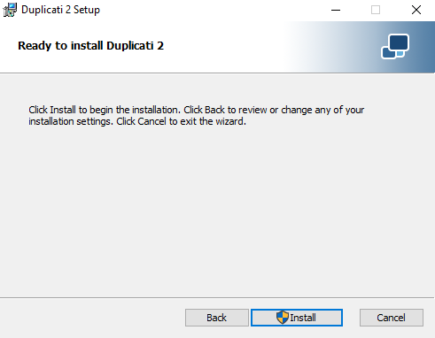
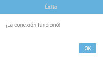

6.2 Copias a disco duro
1. Introducción
En este apartado, se describe un caso práctico de restauración y copias de seguridad mediante la herramienta Duplicati.
2. Instalación
En primer lugar hay que realizar la descarga del software desde su página oficial.
Una vez descargado, hay que ejecutar el fichero para comenzar con la instalación.
1
2
3
4

Una vez termina la instalación, al ejecutarlo, saldrá el panel principal desde el navegador web que se tenga establecido por defecto en el equipo.
3. Copia de seguridad a un disco externo
Como ejemplo, se va a crear una copia de seguridad a un disco externo de unos ficheros del equipo. Desde el menú de la izquierda hay que seleccionar “Añadir copia de seguridad” y configurar una nueva copia de seguridad.
A continuación, hay que introducir un nombre y una frase de seguridad para poder restaurar las copias en un futuro.
Las copias se van a guardar en un disco externo, (En este caso E:). Desde el panel de duplicati se elige el directorio que se encuentra en el disco E:\, para este caso de ejemplo, el directorio es Duplicati-Copias.

Ahora se puede realizar una prueba de conexión para comprobar que el directorio se conecta con duplicati correctamente, para ello, hay que pulsar el botón 'Conexión de prueba' (ver imagen superior).

A continuación, se selecciona el directorio SYSVOL (base de datos de AD) que es lo que se quiere respaldar.
En el siguiente panel se puede seleccionar un horario para determinar la periodicidad con la que se ejecutan las copias de seguridad. Para este primer caso, se elije realizar copias completas cada 2 días a las 13:00, permitiendo únicamente: Lunes, Miércoles, Viernes y Domingo.
Por último, se selecciona el tipo de copias que se quiere realizar. Para este caso de ejemplo, se realizará de forma completa 'Mantener todas las copias de seguridad'. A continuación, hay que pulsar 'Guardar'.
Una vez guardada la copia aparecerá en el menú principal. En caso de que se quiera realizar la copia en el momento, se puede seleccionar “Ejecutar ahora”.
Para este caso de ejemplo, se selecciona “Ejecutar ahora”. Cuando finaliza, ya se podrá ver el estado de la copia en el item 'Inicio'.
4. Restaurar copias de un disco externo
Tras realizarse la copia , se pueden ver los ficheros .aes en el directorio que se había indicado para que se guardaran las mismas.
Ahora, para poder restaurar estos ficheros de copia, desde el panel de la izquierda hay que seleccionar “Restaurar” e indicarle la primera opción, para así restaurar desde los ficheros que se han obtenido de la copia anterior.
A continuación hay que pulsar 'Siguiente' y en el panel que aparece, hay que indicar el directorio donde se encuentran las copias. Para continuar, hay que pulsar 'Siguiente'.
A continuación, hay que Introducir la frase de seguridad correspondiente a esta copia y pulsar el botón 'Conectar'.
A continuación, hay que elegir los ficheros que se quieren restaurar, en este caso, vamos a restaurar todo el directorio SYSVOL completo. Para seguir, hay que pulsar 'Continuar'.
A continuación, hay que indicar el directorio donde se quiere que se guarde el fichero/directorio-s restaurado. Además, se puede decidir si guardar copias o sobrescribir las copias anteriores. Para este caso de ejemplo, se selecciona la 'Localización original' y 'Sobreescribir'.
Para comenzar la restauración de la copia hay que pulsar 'Restaurar'.
Tras restaurar el directorio, se informa del estado, en este caso, se informa que la restauración ha tenido éxito.
Obra publicada con Licencia Creative Commons Reconocimiento No comercial Compartir igual 4.0